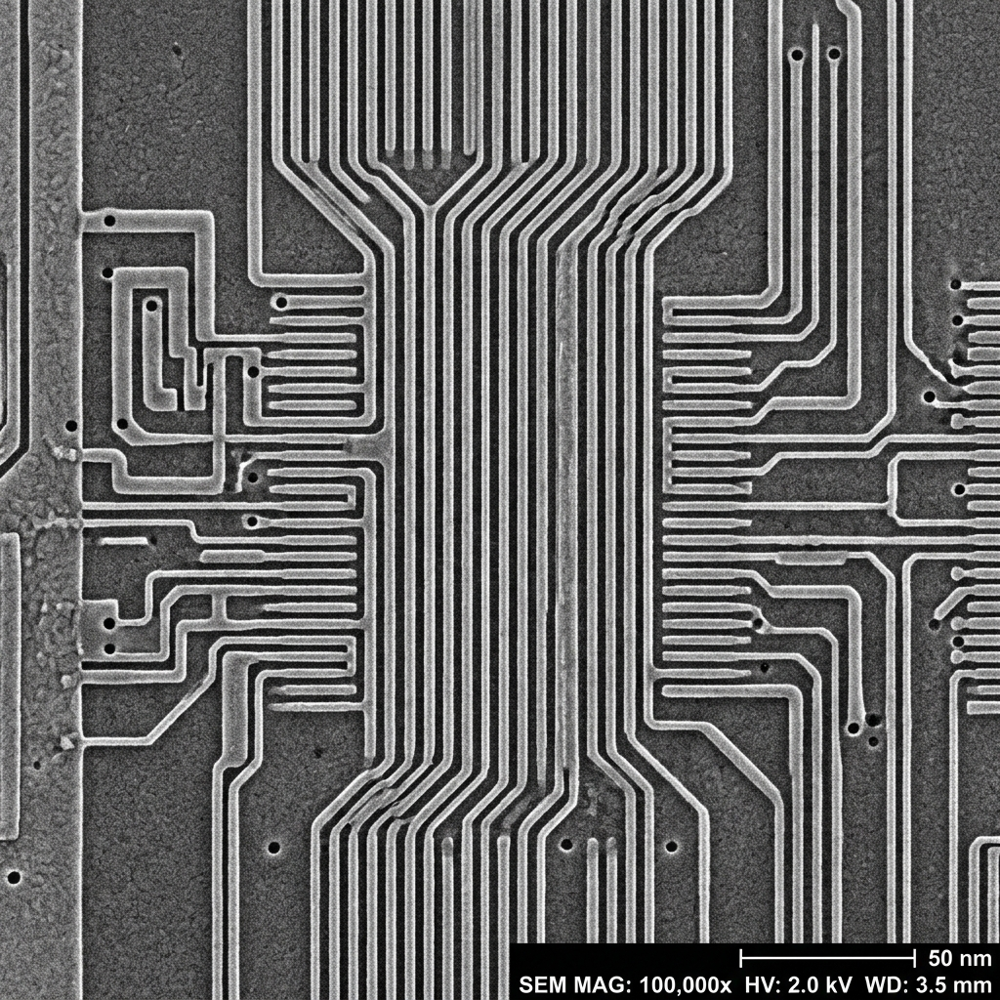

🔬 ARTIMAGEN Python Backend Engine
Compare with Antigravity
"Python(OpenCV)을 백엔드로 사용하여 실제 이미지의 픽셀 물리 현상을 실시간 연산"
🎛️ ARTIMAGEN Parameters
가속 전압 (Vacc)
2.0 kV
빔 전류 (Probe Current)
10 pA
스테이지/빔 드리프트 (Drift)
0.0 nm/s
서버 상태:
확인 중...
연산 속도 (Latency):
0 ms
물리 상태:
안정적 측정 가능
OpenCV Processed SEM Image

Processing...